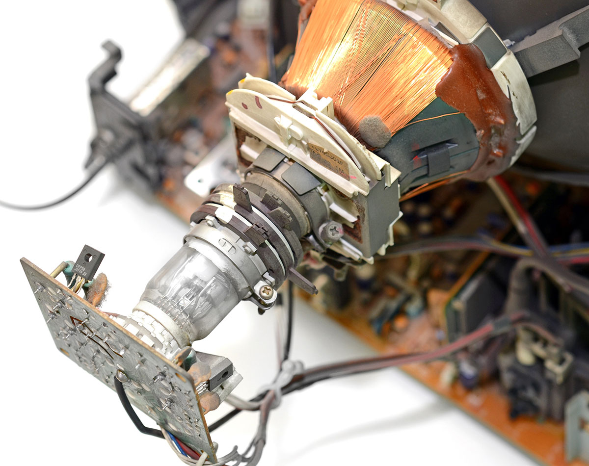
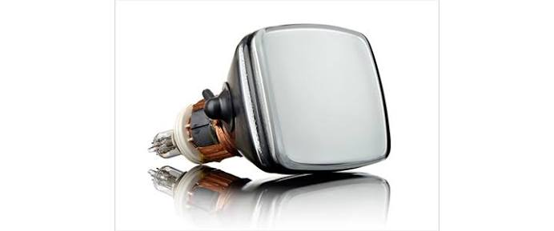
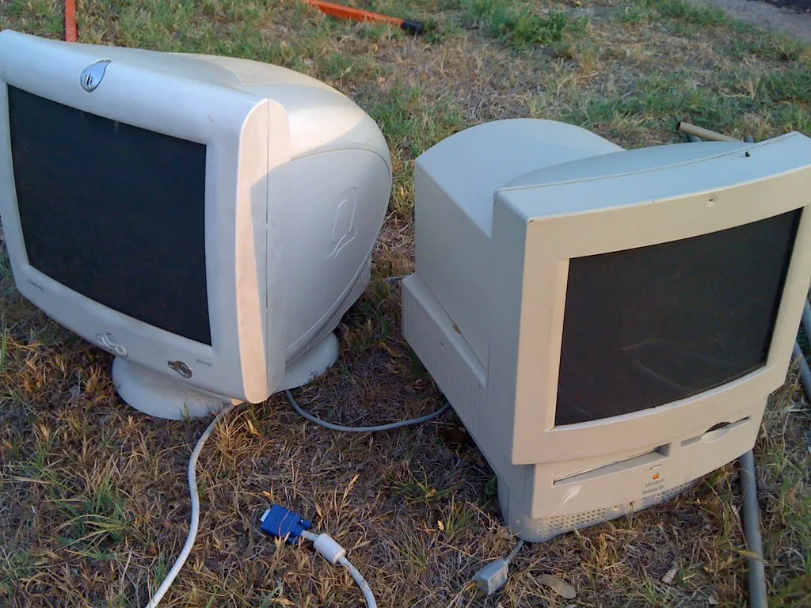
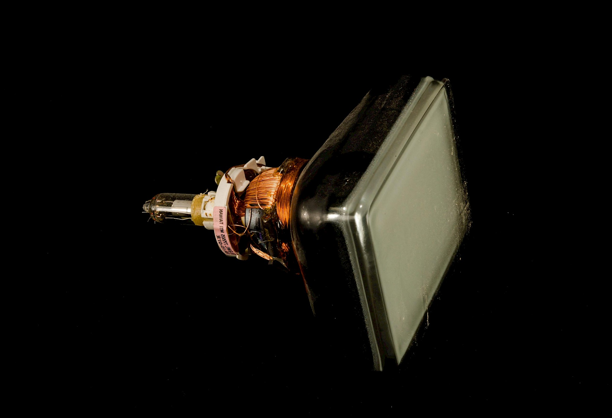

Cathode Ray Tubes (CRTs) contain many harmful substances including lead, arsenic, and other heavy metals. At CWM, we provide a complete solution to discard CRTs following regulations to minimize the risk it poses to the environment. The procedures we follow are regulated under the Environmental Act in Sri Lanka, abiding the international law with this regard.
The following glass structures and other materials in CRT monitors require proper disposal with low negative impact to the environment:
